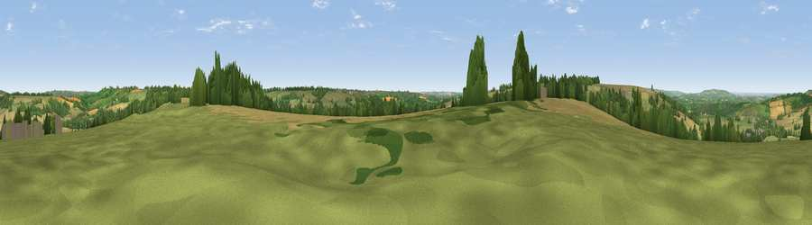

Viewpoint near Little Rollright
#15107 in England · top 27% of its area beats it · near Little RollrightWhere it is
The exact computed spot (SP 29625 30975). Click the marker for map links.
The view, rendered

A 360° render of this exact spot computed from the terrain model, tree cover and land cover — summer colours, afternoon light, calibrated against photographs of famous viewpoints. Real trees, hedges and buildings will differ in detail.
The panorama
Grey silhouette: terrain skyline in each direction (720 bearings, Earth curvature and refraction included). Dashed green: skyline with trees (+15 m) and buildings (+8 m) as obstacles. Blue strip: how far the ground is visible on each bearing.
Where the view opens
Wedge length = distance to the farthest visible ground on that bearing (vegetation-aware). Rings at 10, 25 and 50 km.
What fills the view
48% cropland · 36% grassland · 15% woodland · 1% built-up
Angular shares of the visible panorama (visual magnitude), not map area. Landscape diversity 0.46 (0–1 Shannon).
Key numbers
More beautiful places nearby
The staircase of upgrades: each row has a higher view potential than everything closer. Driving times are estimates from straight-line distance, calibrated against real road routing — check an actual route before setting out.
| Place | Direction | Drive | Score |
|---|---|---|---|
| Viewpoint near Little Rollright | W · 2 km | ~4 min | 64.2 |
| Viewpoint near Little Compton | WNW · 2 km | ~5 min | 67.2 |
| Viewpoint near Upper Brailes | N · 8 km | ~17 min | 68.5 |
| Viewpoint near Upper Tysoe | NNE · 12 km | ~22 min | 70.4 |
| Viewpoint near Ilmington | NW · 15 km | ~26 min | 72.6 |
| Viewpoint near Chipping Campden | WNW · 18 km | ~31 min | 73.3 |
| Viewpoint near Chipping Campden | WNW · 18 km | ~31 min | 76.3 |
| Viewpoint near Meon Vale | NW · 19 km | ~32 min | 77.0 |
51.97646, -1.57011 · source: screening · position refined by local search. Computed location — check access rights before visiting.